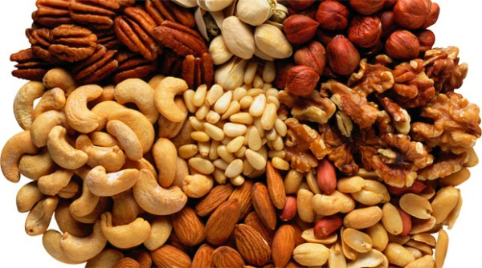

Теплый, пряный, сладковато-терпкий аромат этого масла хорошо знаком кулинарам, с давних пор использующим мускатный орех в качестве изысканной приправы. Масло мускатного ореха позволит вам не только придать различным блюдам тонкую вкусовую нотку, но и внесет в вашу жизнь ощущение праздника. Экзотический аромат этого масла помогает во всем привычном, обыденном увидеть новизну и почувствовать тайну окружающего нас мира.
Эмоциональная сфера. Влияние этого масла на эмоциональное состояние согревающее, заряжающее энергией, немного будоражащее. Этот аромат способствует эмоциональному раскрепощению. Самостоятельно или в смеси с цитрусовым ароматом он прекрасно создает атмосферу праздника, приятного возбуждения, азарта. Это масло помогает воспламениться страстью мужчинам и женщинам.
Целебное действие масла мускатного ореха связано прежде всего с его способностью стимулировать кровообращение, согревать мышцы, суставы и связки. Оно полезно при артритах, миозитах, остеохондрозе. Кроме того, как и все пряности, мускатный орех улучшает пищеварение и работу желудочно-кишечного тракта. Аромат масла мускатного ореха прекрасно очищает, обеззараживает воздух и стимулирует защитные силы организма.
Людям, страдающим от хронического простатита и расширения вен, пригодится мускатный орех. 1 плода средних размеров хватит на 3 – 4 недели, если 33 раза в день откусывать от него по чуть-чуть. Не найдете цельный плод, используйте молотый, который продается как пряность.
Магическое действие мускатного ореха находится под планетарным влиянием Марса. Этот аромат защищает воинов, борцов, помогает раскрыть свою индивидуальность. Масло мускатного ореха способствует самоутверждению на новом поприще, успеху в освоении новых сфер деятельности, проявлению инициативы.
Косметическое использование масла мускатного ореха ограниченно вследствие его раздражающего действия на кожу. Однако в минимальных дозах это масло может быть чрезвычайно полезно благодаря его стимулирующим, омолаживающим свойствам. Немного мускатного ореха придает цветочным ароматам оттенок интриги. Это масло стимулирует кровообращение, питает волосяные фолликулы и укрепляет волосы.
Из мускатного ореха получают очень качественное эфирное масло, которое используют в ароматерапии.
Аромат теплый, дурманяще-пряный, слегка перечный.
Применение: устраняет истерию, повышает яркость восприятия мира.
Косметика: регенерирует, омолаживает, укрепляет клетки кожи.
Лечебные свойства: помогает дышать полной грудью, очищает, повышает эластичность стенок бронхиального древа.
При носовых, раневых, маточных и других кровотечениях, а также при кровоизлияниях обладает кровоостанавливающим действием.
Оказывает антибактериальное действие при кишечных инфекциях, выражающихся частыми позывами.
Анальгезирует, устраняет отечность и воспалительные реакции при артритах, миозитах, остеохондрозе, невритах, невралгиях.
Для женщин: устраняет дисфункциональные расстройства в климактерическом периоде.
Дозировки:
1) аромакурительницы: 5 – 7 капель;
2) холодные ингаляции: длительность 5 – 7 мин;
3) горячие ингаляции: 2 капли, длительность процедуры 3 – 5 мин;
4) растирания: 3 – 4 капли на 10 г транспортного масла;
5) ванны: 1 – 2 капли;
6) компрессы: 3 – 5 капли;
7) массаж: 3 – 5 капли на 15 мл масла сладкого миндаля;
8) обогащение кремов, тоников, шампуней: 2 капли на 30 г основы;
9) аромамедальоны: 2 – 3 капли;
10) обогащение водки: 1 – 2 капли на 1/2 л, встряхнуть, дать отстояться;
11) внутреннее употребление: 1 каплю мускатного ореха смешать с 2 коплей растительного масла, принимать в «хлебной капсуле» 2 – 3 раза в день.
Противопоказания: повышенная нервная возбудимость, беременность, эпилепсия, психические заболевания, индивидуальная непереносимость мускатного ореха.
Ощущения: при нанесении на кожу – жжение, пощипывание в течение 3 – 4 мин.
Примечание: мускатное масло в высоких концентрациях вызывает сильное раздражение кожи и гиперстимуляцию нервной системы. Его следует применять с осторожностью, строго соблюдая дозировку.
Прячьте эфирные масла от детей!